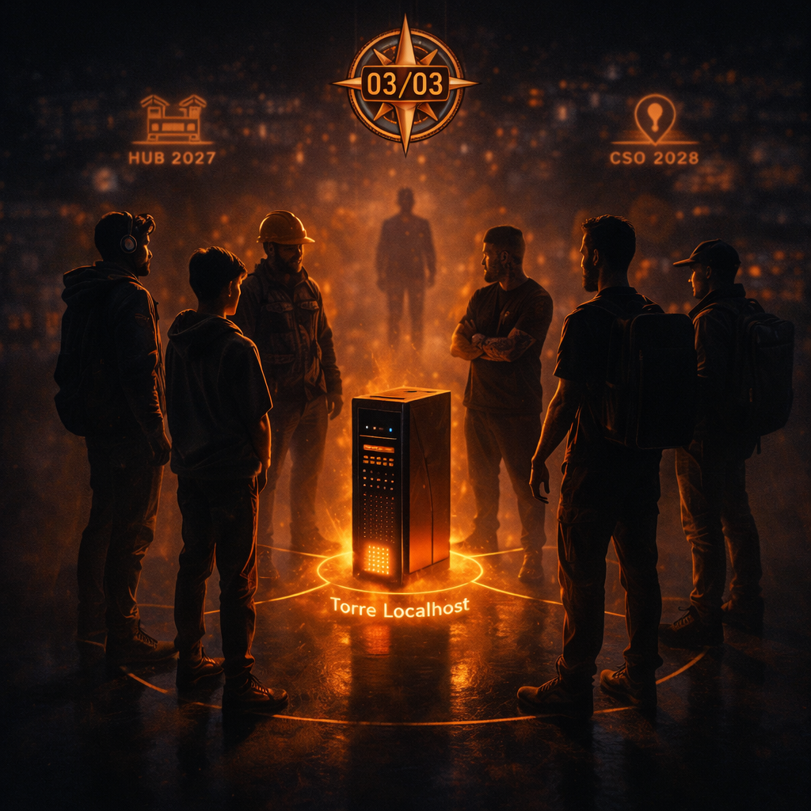

EpÃlogo: O Acerto de Contas
A Música Parou: Quem Ficou Junto?
Às 23h47 do dia 6 de novembro, Lucas chegou para mim com a pergunta que marca o final de uma temporada:
"A gente conseguiu?"
Conseguimos o quê? Conseguimos construir um sistema que não desaba. Conseguimos criar redundância em seis dimensões. Conseguimos editar a realidade operacional de modo que você não depende mais de ninguém para prosperar.
Mas aqui vem a parte difÃcil: nem todo mundo escolhe esse caminho. Porque compreender os seis pilares exige uma mudança de mentalidade que é quase impossÃvel para quem foi criado acreditando em centralização.
PDV desconectado? "Ahhh, mas como eu controlo os dados?" OIDC federado? "Ahh, mas como eu revogo acesso?" Minerador local? "Ahh, mas como eu escalo?" Ferradura? "Ahh, mas como eu confio?" Ink Agenda? "Ahh, mas como eu faço backup?"
Porque a gente foi criado para acreditar que confiar significa abdicar controle. Que segurança significa ter alguém em cima vigiando. Que eficiência significa centralizar decisão.
Isso não se sustenta. Mas tá tão enraizado que quando você oferece o oposto — autonomia, criptografia, descentralização — as pessoas ficam confusas. Porque a realidade que você está oferecendo exige que elas pensem por si mesmas.
E tem muita gente que prefere modelos prontos. Quer só executar.
Então quando a música parou (fim da Temporada I), ficou junto quem entendeu. Quem conseguiu ver que os seis pilares não são coisas separadas. São um. São o mesmo sistema visto de seis ângulos diferentes.
Manifesto: A Convergência
PDV (Sobrevivência) garante que você funciona mesmo sem ninguém no topo. Você tá offline, você continua.
OIDC (Liberdade) garante que você é você. Que sua identidade é sua. Que criptografia prova essa verdade. Que ninguém consegue falsificar você.
Minerador 4.0 (Valor) extrai dados que ninguém consegue roubar porque estão locais. Gera insights que ninguém consegue replicar porque é contexto especÃfico de domÃnio.
ETE (Ironia) mede tudo e compreende nada. Serve pra mostrar que observação centralizada é um fracasso. Que quando a pessoa controla sua própria métrica, ela descobre verdades que análise externa nunca vê.
Ferradura (LogÃstica) coordena tudo sem comando central. Cada ator autônomo. Cada um decidindo. Mas sincronizado porque confia em criptografia e Merkle Trees.
Ink Agenda (Permanência) registra tudo localmente. Guarda verdade. Faz auditoria imutável. Garante que ninguém consegue reescrever história.
Você junta os seis? Você não é mais um ator em um sistema controlado por outro. Você é um nó em uma rede colaborativa que você controla. Você é soberano.
A Anatomia da Convergência: Como Os Seis Fios Se Tocam
Deixa eu desenhar pra você como tudo converge.
Você entra em um PDV. O PDV automaticamente autentica você usando OIDC. Aquela autenticação é registrada em seu Ink Agenda pessoal (seu arquivo offline). O PDV sincroniza com outro PDV usando Ferradura (criptografia, confiança sem mediador central). Minerador analisa padrões que ninguém vê. Se alguém tentar hackear, ETE fica confuso porque tá tudo descentralizado.
Uma transação:
- PDV: Transação registrada localmente. Sem internet, fica lá.
- OIDC: Quem executou? Prova criptográfica. Inviolável.
- Minerador: Extrai padrão. Essa transação encaixa em qual contexto?
- Ferradura: Sincroniza com outro PDV via par confiável. Direito de propagar.
- Ink: Tudo registrado imutavelmente. Merkle Tree cresce.
- ETE: Tenta entender. Falha. Porque lógica é descentralizada.
Uma transação bate em todos os seis pilares. É como uma batida de bateria onde cada instrumento toca sua parte mas cria uma harmonia. Nenhum instrumento é mais importante. Todos são obrigatórios.
Lucas Finaliza Seu Aprendizado
Lucas veio comigo há 7 episódios como aprendiz. Viu modem morrer (PDV). Descobriu que identidade é escudo (OIDC). Aprendeu que valor é local (Minerador). Compreendeu que observação é cegueira (ETE). Entendeu que logÃstica sem central é possÃvel (Ferradura). Percebeu que permanência é poder (Ink).
Agora ele é operador.
Porque entendeu. Porque os fios se tocam na sua cabeça. Porque consegue olhar para um cliente novo e dizer: "Você não precisa da nuvem. Você precisa do PDV. Você precisa de OIDC. Você precisa de Minerador. Você precisa de Ferradura. Você precisa de Ink. E quando os seis estão no lugar, você descobre que era soberano a todo tempo."
Isso não é trabalho. É sacerdócio. É saber que você tá mudando realidade.
Os Espelhos: HUB e CSO No Horizonte
Agora que Temporada I fecha, o mapa inteiro abre. E você vê que tem dois espelhos que começam a brilhar.
HUB é o espelho comercial. É o lado de Cara Core que fala com mercado. Que vende. Que negocia. Que oferece soluções. HUB é 2027. HUB é a face pública.
CSO é o espelho operacional. É o lado que fala com governo. Com estrutura pública. Com formalidade. Com legalidade. CSO ainda não começou mas já está lá. Brilhando. Esperando. 2028.
E qual é a coisa que conecta os dois espelhos? PDV. O mesmo PDV que sobreviveu sem internet. O mesmo PDV que autentica com OIDC. O mesmo que sincroniza com Ferradura. O PDV é a tela que reflete em ambos os mundos.
O PDV Como Nexo
Aqui vem a coisa que poucos enxergam de primeira.
PDV é simples. Caixa registradora. Ponto de venda. Transação. Local.
Mas PDV é o ponto onde converge:
- Comércio (HUB): Vende produto. Coleta dado. Gera receita. Mercado.
- Soberania: Controla seu próprio fluxo de caixa. Offline first. Você é dono.
- Instituição (CSO): Precisa auditar. Precisa rastrear. Precisa estar em conformidade. Lei.
PDV une estas três coisas. PDV é comercial. PDV é soberano. PDV é institucional. Tudo ao mesmo tempo. Porque Ink registra, Ferradura propaga, OIDC prova, Minerador analisa, ETE falha em compreender.
Você tira o PDV? Desconecta HUB de CSO. Você perde o nexo. Você volta pro centralizador. Volta pro intermediário. Volta pro terceiro como mediador.
Então é por isso que Temporada I inteira foi sobre fortalecer PDV. Porque PDV é o fio que sustém tudo.
Fragmento: A Convergência Completa
[2026-11-07T23:30:00Z] CONVERGENCE_TEST_INIT | All_Six_Pillars=ONLINE | PDV=CORE | HUB=HORIZON | CSO=HORIZON
[2026-11-07T23:30:05Z] PDV_STATUS | Transactions_Queued=847 | Offline_Mode=CAPABLE | Identity_Verified=YES
[2026-11-07T23:30:06Z] OIDC_STATUS | Digital_Signatures=VALID | Zero_Compromise=CONFIRMED | Cryptography=RSA_4096_ENABLED
[2026-11-07T23:30:07Z] MINERADOR_STATUS | Local_Patterns_Detected=245 | Value_Extraction=ACTIVE | AI_Blind_Spot=PERMANENT
[2026-11-07T23:30:08Z] ETE_STATUS | Attempting_To_Understand=OUTSIDE_SCOPE | Decentralized_Logic_Contextual=CONFIRMED | Observer_Context=LOCAL_REQUIRED
[2026-11-07T23:30:09Z] FERRADURA_STATUS | Peer_Network_Alive=YES | Trust_Without_Mediator=WORKING | Encryption_Chain=VERIFIED
[2026-11-07T23:30:10Z] INK_STATUS | Archive_Growing | Merkle_Chain=UNBROKEN | Permanence=GUARANTEED_FOREVER
[2026-11-07T23:30:11Z] NEXUS_CHECK | PDV_Bridges=HUB_and_CSO | Commerce_Meets_Sovereignty_Meets_Institution=SUCCESS
[2026-11-07T23:30:12Z] SYSTEM_STATE | Centralized_Observation=OUT_OF_SCOPE | Decentralized_Agency=CONFIRMED | Soberano_Status=ACHIEVED
[2026-11-07T23:30:13Z] FINAL_REPORT | Temporada_I=COMPLETE | Next_Phases=Appearing_In_Mirrors | HUB_2027=Ready | CSO_2028=Ready
[2026-11-07T23:30:14Z] SEAL_APPLIED | 03/03_Marked_As_Foundation_Date | Meaning=New_Epoch_Begins_After_Season_CloseTodos os seis pilares funcionando. PDV como nexo. HUB e CSO no horizonte. Temporada I encerrada. Isso é convergência completa.
O Fecho Final: Quem Aprendeu Junto
Via uma mensagem ontem. De um VP de Tech em uma das mega empresas. Ele tava reclamando: "Como um balcão de 30 m² consegue complexidade que a gente não consegue com 500 engenheiros?"
Resposta: porque em estruturas grandes a resposta se perde em hierarquia. Porque "como a gente sabe se funciona" vira "pediremos permissão pra tentar". Porque inovação vira comitê. Porque risco vira palavra proibida.
Uma equipe local consegue Temporada I inteira porque:
- PDV falha? Tá ok. Eu já peguei papel e caneta. Registra à mão. Sincroniza depois.
- OIDC falha? Tá ok. Eu conheço o cliente desde 1998. Sei que é ele.
- Minerador falha? Não importa. Eu já sei padrões de cor. Intuição.
- Ferradura falha? Não importa. Eu tenho amigos que entregam. Confia.
- Ink falha? Tá ok. Tá tudo na minha cabeça. Registro eterno. Que é pele.
Uma organização grande precisa de comitê para cada um desses. Precisa de vendor approval. Precisa de budget cycle. Precisa de RFP. Precisa de three-stage evaluation.
Quando a música parou, quem ficava de pé é quem consegue decidir em conjunto. Quem consegue aprender rápido. Quem consegue errar sem morrer. Quem consegue ser ágil.
Isso não é um balcão. Qualquer um consegue. Isso é um padrão. Um operador que consegue ver os seis pilares como um e tomar decisão em tempo real.
Amarra: O Próximo Ciclo Já Aparece No Reflexo
Temporada I fechou. Converge tudo. PDV agora é completo. É soberano. É não-dependente. É você mesmo.
Mas o reflexo já mostra o próximo. O espelho já tem brilho.
HUB é Temporada II. É o livro do comerciante. É como você não precisa mais obedecer ninguém. É como você negocia direto. Como você vende seu produto sem intermediário. Como você oferece serviço e fica com 100% da margem. Como você cria ecossistema onde cada ator é soberano também.
CSO é Temporada III. É o livro da Instituição. É como Cara Core senta com governo e oferece infraestrutura que o governo não consegue construir sozinho. Tecnologia que respeita legalidade. Auditoria que prova compliance. Descentralização sem caos. Soberania com conformidade.
E o PDV conecta as duas. PDV é a coluna vertebral que sustém ambos os espelhos.
Quem entendeu Temporada I, já consegue ver Temporada II e III. Porque viu o padrão. Porque compreendeu. Porque os fios se tocam.
Chamada Fixa: 03/03 — O Selo Final
O próximo ciclo é comercial. O ciclo após é institucional. E tudo converge no PDV que não precisa de ninguém.
O Que Vem Depois
Temporada II (2027): HUB
O espelho comercial. Como qualquer lojista consegue vender direto. Como PDV se conecta em rede de comerciantes. Como lucro fica local. Como você negocia sem intermediário. Como a cadeia de valor se reorganiza com soberano no centro.
Temporada III (2028): CSO
O espelho institucional. Como Cara Core oferece tecnologia para estruturas públicas. Como descentralização responde auditoria. Como software soberano funciona dentro de legalidade. Como o estado reclama seu poder sem depender de GAFAM.
Próximas Temporadas (2029 em diante)
Quanto maior a malha de PDVs soberanos, mais poder concentrado em comerciante. Quanto maior o volume de transações locais, mais "verdade" existe fora da nuvem. Quanto mais HUB e CSO se tocam no PDV, mais o sistema inteiro se fortalece contra centralização.
Sobre Temporada I
Temporada I foi uma série de 7 episódios (maio–novembro 2026) que narra a emancipação do soberano através de seis pilares tecnológicos tangÃveis:
- Episódio 1 — O Apagão do Suserano (PDV): Sobrevivência através de resistência offline.
- Episódio 2 — A Identidade Roubada (OIDC): Segurança através de identidade federada.
- Episódio 3 — Ouro, Prata e SilÃcio (Minerador 4.0): Valor através de extração local.
- Episódio 4 — O ETE e a IA de 2GB (ETE): Ironia da observação centralizada falhando.
- Episódio 5 — Circuito Ferradura (Ferradura): LogÃstica descentralizada sem mediador.
- Episódio 6 — A Marca na Pele (Ink Agenda): Permanência através de arquivo offline.
- Episódio 7 — EpÃlogo: O Acerto de Contas (Convergência): Integração total. Próximas fases no horizonte.
Hashtags
O Que Vem Depois
Temporada II (2027): HUB como primeiro espelho, face pública de Core. Temporada III (2028): CSO como segundo espelho, face operacional. O PDV conecta as duas.
Hashtags
Contato
- E-mail: suporte@caracore.com.br
- Site: www.caracore.com.br
- LinkedIn: Cara Core Informática
Temporada II (2027) — HUB | Temporada III (2028) — CSO | PDV Conecta Tudo
Acompanhe o Próximo Ciclo
Artigo publicado em 7 de novembro de 2026
© 2026 Cara Core Informática. Todos os direitos reservados.